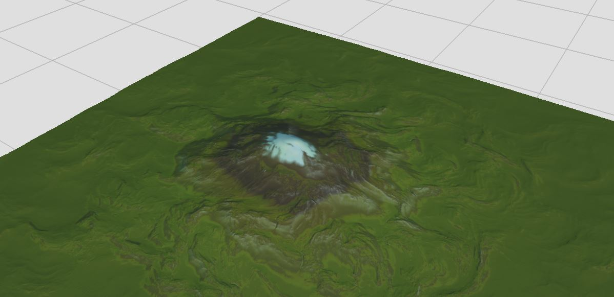
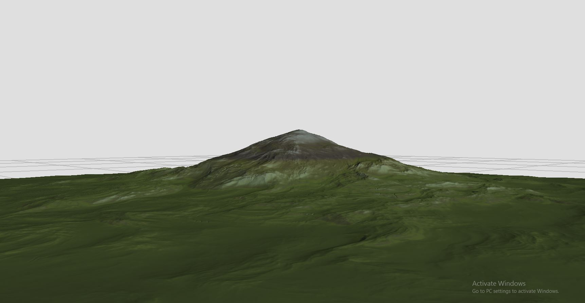
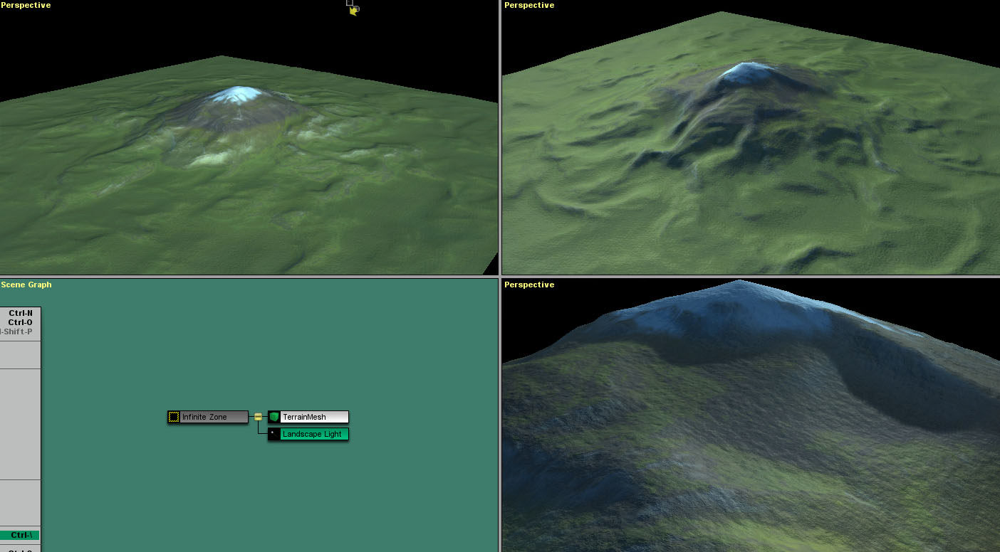

 by Jesse Meyer » 20 Mar 2014, 13:47
by Jesse Meyer » 20 Mar 2014, 13:47




 by cbken » 20 Mar 2014, 14:00
by cbken » 20 Mar 2014, 14:00
 by cbken » 20 Mar 2014, 14:06
by cbken » 20 Mar 2014, 14:06
Jesse Meyer wrote:Here's a super quick hack job translating output from WM into C4. This could be thought of as the lowest quality bar possible without really dorking up the process.
 by ska » 20 Mar 2014, 14:17
by ska » 20 Mar 2014, 14:17
 by Jesse Meyer » 20 Mar 2014, 14:20
by Jesse Meyer » 20 Mar 2014, 14:20
cbken wrote:Thanks Jesse. Yea the terrains look good but I think more control over individual details are needed for an fps game. I'm not convinced WM type terrains is the way to go for that after all.
 by Jesse Meyer » 20 Mar 2014, 14:29
by Jesse Meyer » 20 Mar 2014, 14:29
ska wrote:Thx!
WOW Jesse, that looks really cool! I downloaded the free version of the WM but I'm going nowhere. Maybe would be a good idea to check out the tutorials.
Does the WM export a big texture for the whole terrain and do you use that on c4?
This can be really usefull for farthest landscapes.
 by cbken » 20 Mar 2014, 15:05
by cbken » 20 Mar 2014, 15:05
Jesse Meyer wrote:cbken wrote:Thanks Jesse. Yea the terrains look good but I think more control over individual details are needed for an fps game. I'm not convinced WM type terrains is the way to go for that after all.
You could be right. If meter by meter control is required then WM will probably just get in your way if it's used exclusively. I'm aware that some studios, once they've finalized their hand crafted terrain will import it into WM to generate all the weathering details or color maps based on slope / height / angle / etc. It can do a lot without ever having to actually generate the terrain itself.
 by Davaris » 20 Mar 2014, 16:22
by Davaris » 20 Mar 2014, 16:22

 by Davaris » 20 Mar 2014, 16:24
by Davaris » 20 Mar 2014, 16:24
ska wrote:It´s a lot of separated layers, each layer is different parts of terrains. You just need to assemble the layers in the way you like, and then import them to c4.
 by cbken » 20 Mar 2014, 18:25
by cbken » 20 Mar 2014, 18:25
Davaris wrote:ska wrote:It´s a lot of separated layers, each layer is different parts of terrains. You just need to assemble the layers in the way you like, and then import them to c4.
Can these ps files be opened in Gimp? I would love to take a look.
 by ska » 20 Mar 2014, 18:38
by ska » 20 Mar 2014, 18:38
 by Davaris » 20 Mar 2014, 19:57
by Davaris » 20 Mar 2014, 19:57
 by Davaris » 20 Mar 2014, 20:19
by Davaris » 20 Mar 2014, 20:19
 by ska » 20 Mar 2014, 21:39
by ska » 20 Mar 2014, 21:39
 by Käy.Vriend » 24 Mar 2014, 11:18
by Käy.Vriend » 24 Mar 2014, 11:18

 by ska » 24 Mar 2014, 12:26
by ska » 24 Mar 2014, 12:26
 by OffAxis » 13 Apr 2014, 20:00
by OffAxis » 13 Apr 2014, 20:00
ska wrote:Hey CbKen
In our game, we first make different parts of the terrain in photoshop. The parts are mountains, volcanos, planes and etc. After that we put each part in separated layers. As instance we have several layers of mountains. Then we import the tga into c4, and start to sculpt.
We make several different terrain blocks with different densitys and texture sizes. We let the blocks near the camera more dense and with the texture size smaller.
And finally we put a lot of props like rocks, trees, peaces of terrain on top of it.
HEre´s a picture
http://1cdd.com.br/producao/wp-content/ ... /foto1.jpg

 by Botagar » 14 Apr 2014, 04:21
by Botagar » 14 Apr 2014, 04:21
OffAxis wrote:ska wrote:Hey CbKen
In our game, we first make different parts of the terrain in photoshop. The parts are mountains, volcanos, planes and etc. After that we put each part in separated layers. As instance we have several layers of mountains. Then we import the tga into c4, and start to sculpt.
We make several different terrain blocks with different densitys and texture sizes. We let the blocks near the camera more dense and with the texture size smaller.
And finally we put a lot of props like rocks, trees, peaces of terrain on top of it.
HEre´s a picture
http://1cdd.com.br/producao/wp-content/ ... /foto1.jpg
Just popping in after some time away from here... Checked out that screenshot and.. wow. Nevermind the technique used to create it.. that is some gorgeous work! Probably one of the most impressive things I've seen done with C4. Why isn't that screenshot, and others from the same project, in this site's screenshots section?
Very impressive!
 by ska » 22 Apr 2014, 09:29
by ska » 22 Apr 2014, 09:29
 by Davaris » 23 Apr 2014, 04:34
by Davaris » 23 Apr 2014, 04:34
 by Jesse Meyer » 23 Apr 2014, 20:03
by Jesse Meyer » 23 Apr 2014, 20:03
 by Davaris » 24 Apr 2014, 03:59
by Davaris » 24 Apr 2014, 03:59
 by JamesH » 24 Apr 2014, 05:12
by JamesH » 24 Apr 2014, 05:12
Users browsing this forum: No registered users and 0 guests
| Company | Contact | Privacy Policy | Site Map | Copyright © 2001–2015 Terathon Software LLC |  |
)window.location=%27http://1cdd.com.br/producao/wp-content/uploads/2014/02/foto1.jpg%27){kind=link}